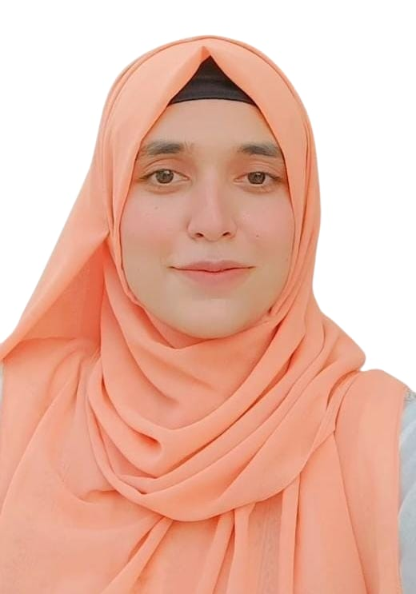

Speech & Language Delay
Support for vocabulary, understanding, sentence development and expressive communication.
Learn more →Personalized, evidence-informed communication support for children, teens and adults—delivered in a calm, encouraging environment where progress feels possible.

Specialized support
Every plan starts with an assessment and is tailored around age, communication profile, daily needs and meaningful goals.
Support for vocabulary, understanding, sentence development and expressive communication.
Learn more →Communication-focused support for speech and language needs associated with hearing loss.
Learn more →Individualized support for functional communication, interaction and social communication goals.
Learn more →Strategies supporting attention, listening, language organization and social participation.
Learn more →Targeted work on speech sound production, clarity and phonological patterns.
Learn more →Support for easier, more confident communication and individualized fluency goals.
Learn more →Assessment-led support for vocal quality, healthy voice habits and functional voice use.
Learn more →Rehabilitation supporting speaking, understanding, reading and writing after language loss.
Learn more →Communication is more than words—it is connection, confidence and participation in everyday life.
Our approach
We combine structured assessment, individualized goals and family involvement so therapy feels focused, supportive and practical.
We begin by understanding your concerns and evaluating speech, language and communication skills.
We create personalized goals and recommend a therapy schedule based on individual needs.
Therapy is paired with practical home strategies so progress continues beyond the clinic.
Who we support
Your clinical team
Qualified speech and language professionals focused on supportive, evidence-informed care and meaningful progress.
Providing individualized assessment and therapy for speech, language and communication needs across different ages.
Supporting clients and families with focused communication goals and practical therapy strategies.
We provide therapy for Speech and Language Delay, Hearing Impairment, Autism Spectrum Disorder (ASD), ADHD, Articulation & Phonological Disorders, Stuttering & Fluency Disorders, Voice Disorders and Aphasia for children, teens and adults.
If your child is not saying single words by around 18 months or not combining two words by around age 2, it is a good time to seek an assessment. Early intervention can help identify needs sooner.
Common signs can include limited talking or vocabulary, unclear speech, difficulty following instructions, stuttering, or difficulty with social communication. A full assessment can help guide you.
We discuss your concerns, observe communication and assess relevant speech and language skills. We then create a personalized therapy plan and recommend next steps.
Every person is different. Progress depends on age, diagnosis, goals, consistency and home practice. Some families begin noticing changes within 8–12 weeks of regular sessions, while others need more time.
Typically 2–3 sessions per week, each around 30–45 minutes. The recommended schedule is discussed after the initial assessment.
Yes. We guide parents with home exercises and communication strategies so practice can continue naturally outside therapy sessions.
Johar Child & Polyclinic, 200 C, BOR Housing Society, Johar Town, Lahore.
Call +92 325 1979659 or email awaaztherapycentre@gmail.com. We recommend starting with an assessment.
Yes. We support teens and adults with needs including stuttering, articulation, voice, aphasia and speech rehabilitation related to hearing loss.
Your child will be treated by qualified speech-language professionals at Awaaz Therapy Centre using individualized and supportive approaches.
Yes. We provide specialized communication support for children with Autism Spectrum Disorder and ADHD, including goals related to attention, social communication and functional participation.
Tell us a little about your concern and we will help you take the next step.